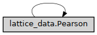

Pearson
- class ase2sprkkr.physics.lattice_data.Pearson(pearson_symbol, bravais_number, family, centering_type, herman_mauguin, shoenflies)[source]
This class holds informations about translation symmetry of a lattice with a given Pearson symbol.
Class hierarchy
Constructor
- __init__()
- static from_symbol(pearson_symbol)[source]
Return the Pearson symbol (describing the translation symmetry) that corresponds to the given Pearson symbol
- Parameters
pearson_symbol (str) –
- pearson = None
Mapping of all possible Pearson symbols to Pearson objects
- pearsons = {'aP': Pearson(pearson_symbol='aP', bravais_number=1, family='triclinic', centering_type='primitive', herman_mauguin='-1', shoenflies='C_i'), 'cF': Pearson(pearson_symbol='cF', bravais_number=13, family='cubic', centering_type='face-centered', herman_mauguin='m3m', shoenflies='O_h'), 'cI': Pearson(pearson_symbol='cI', bravais_number=14, family='cubic', centering_type='body-centered', herman_mauguin='m3m', shoenflies='O_h'), 'cP': Pearson(pearson_symbol='cP', bravais_number=12, family='cubic', centering_type='primitive', herman_mauguin='m3m', shoenflies='O_h'), 'hP': Pearson(pearson_symbol='hP', bravais_number=11, family='hexagonal', centering_type='primitive', herman_mauguin='6/mmm', shoenflies='D_6h'), 'hR': Pearson(pearson_symbol='hR', bravais_number=10, family='trigonal', centering_type='primitive', herman_mauguin='-3m', shoenflies='D_3d'), 'mP': Pearson(pearson_symbol='mP', bravais_number=2, family='monoclinic', centering_type='primitive', herman_mauguin='2/m', shoenflies='C_2h'), 'mS': Pearson(pearson_symbol='mS', bravais_number=3, family='monoclinic', centering_type='primitive', herman_mauguin='2/m', shoenflies='C_2h'), 'oF': Pearson(pearson_symbol='oF', bravais_number=7, family='orthorombic', centering_type='face-centered', herman_mauguin='mmm', shoenflies='D_2h'), 'oI': Pearson(pearson_symbol='oI', bravais_number=6, family='orthorombic', centering_type='body-centered', herman_mauguin='mmm', shoenflies='D_2h'), 'oP': Pearson(pearson_symbol='oP', bravais_number=4, family='orthorombic', centering_type='primitive', herman_mauguin='mmm', shoenflies='D_2h'), 'oS': Pearson(pearson_symbol='oS', bravais_number=5, family='orthorombic', centering_type='body-centered', herman_mauguin='mmm', shoenflies='D_2h'), 'tI': Pearson(pearson_symbol='tI', bravais_number=9, family='tetragonal', centering_type='body-centered', herman_mauguin='4/mmm', shoenflies='D_4h'), 'tP': Pearson(pearson_symbol='tP', bravais_number=8, family='tetragonal', centering_type='primitive', herman_mauguin='4/mmm', shoenflies='D_4h')}